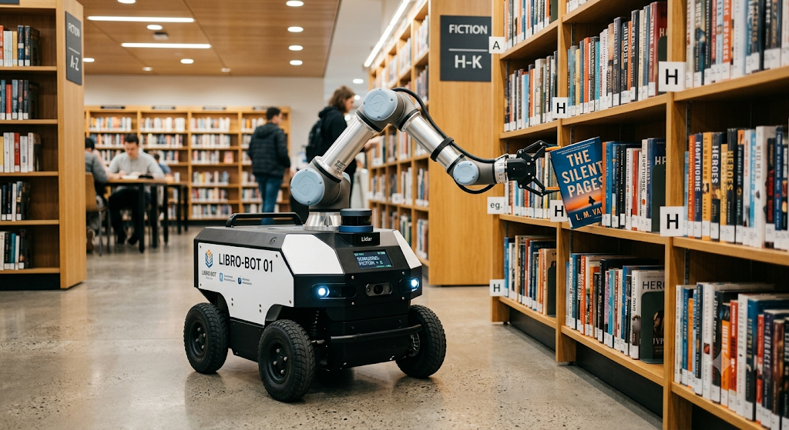
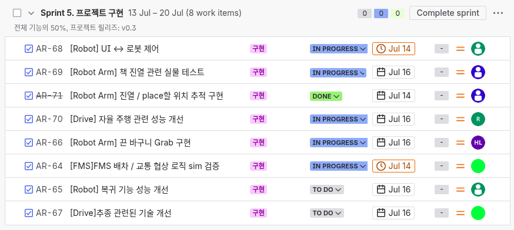

TEAM ARTE · 주간 진행 보고 · 2026.07.14
ABA
Arte Book Assistance
도서관 사서를 돕는
사서 협동로봇, 리비(Libi)
주행로봇과 로봇팔이 결합된 모바일 매니퓰레이터 — 사서의 손과 다리가 되어 책을 직접 집고 옮깁니다.

01 Topic
사서를 대체하지 않는, 사서 협동로봇
리비는 사서를 대체하지 않는다. 사서의 손과 다리가 되는 협동로봇.
What · 정의
주행로봇Autonomous Base
+
로봇팔Robot Arm
=
사서 협동로봇
서가에서 책을 직접 집어 배달·반납·정렬.
주간 · Service
☀️ 이용자·사서 지원
도서 요청 픽업·배달, 반납 회수, 추천·검색·길잡이 안내.
야간 · Operation
🌙 무인 도서관 관리
침입 감지·녹화·신고.
02 Progress · 로봇팔
로봇팔 Robot Arm · Pick · Place · Grasp
① 도서 파지 · Pick완료
- ArUco Marker 방식으로 제어
- PnP 연산으로 tvec·rvec 기반 3D Pose 추정
- 카메라–그리퍼 오프셋
- Hand-eye Calibration
- One-shot pose grasp
- 지속 갱신·보정 대신 초기 1회 좌표를 찍고 이동
- Move L 명령 · PBVS 방식 제어
② 도서 배치 · Place슬롯 인식진행 중
- IBVS 기반 책 배치 시도
- 빈 슬롯 인식 → 빈 슬롯에 책 삽입
- OpenCV로 슬롯 검출
- 슬롯 정상 인식 시 ID 배정
- Optical Flow 기반 슬롯 위치 추정
- ID 할당 슬롯의 feature point 지속 추출
- 이전·현재 feature 대응으로 affine transform 추정 (RANSAC 알고리즘으로 이상치에 강건)
- 추정된 transform을 각 슬롯에 부여 → 위치 추정
- 화면을 벗어났다 돌아와도 최초 ID 유지
- 한계점
- 급격한 움직임·블러·조명 변화에 취약
- 장시간 완전 소실 후 재진입 시 재식별 한계
③ 바구니 파지 · Grasp진행 중
- YOLO로 반납 바구니 실시간 인식
- 손잡이(끈) 파지점 선정 → Gripper 파지
- 어렵다고 판단되면 미니어처로 대체 예정
시연 영상
02 Progress · 로봇팔
로봇팔 Robot Arm · Pick · Place · Grasp
① 도서 파지 · Pick완료
- ArUco Marker 방식으로 제어
- PnP 연산으로 tvec·rvec 기반 3D Pose 추정
- 카메라–그리퍼 오프셋
- Hand-eye Calibration
- One-shot pose grasp
- 지속 갱신·보정 대신 초기 1회 좌표를 찍고 이동
- Move L 명령 · PBVS 방식 제어
② 도서 배치 · Place슬롯 인식진행 중
- IBVS 기반 책 배치 시도
- 빈 슬롯 인식 → 빈 슬롯에 책 삽입
- OpenCV로 슬롯 검출
- 슬롯 정상 인식 시 ID 배정
- Optical Flow 기반 슬롯 위치 추정
- ID 할당 슬롯의 feature point 지속 추출
- 이전·현재 feature 대응으로 affine transform 추정 (RANSAC 알고리즘으로 이상치에 강건)
- 추정된 transform을 각 슬롯에 부여 → 위치 추정
- 화면을 벗어났다 돌아와도 최초 ID 유지
- 한계점
- 급격한 움직임·블러·조명 변화에 취약
- 장시간 완전 소실 후 재진입 시 재식별 한계
③ 바구니 파지 · Grasp진행 중
- YOLO로 반납 바구니 실시간 인식
- 손잡이(끈) 파지점 선정 → Gripper 파지
- 어렵다고 판단되면 미니어처로 대체 예정
시연 영상
02 Progress · 로봇팔
로봇팔 Robot Arm · Pick · Place · Grasp
① 도서 파지 · Pick완료
- ArUco Marker 방식으로 제어
- PnP 연산으로 tvec·rvec 기반 3D Pose 추정
- 카메라–그리퍼 오프셋
- Hand-eye Calibration
- One-shot pose grasp
- 지속 갱신·보정 대신 초기 1회 좌표를 찍고 이동
- Move L 명령 · PBVS 방식 제어
② 도서 배치 · Place슬롯 인식진행 중
- IBVS 기반 책 배치 시도
- 빈 슬롯 인식 → 빈 슬롯에 책 삽입
- OpenCV로 슬롯 검출
- 슬롯 정상 인식 시 ID 배정
- Optical Flow 기반 슬롯 위치 추정
- ID 할당 슬롯의 feature point 지속 추출
- 이전·현재 feature 대응으로 affine transform 추정 (RANSAC 알고리즘으로 이상치에 강건)
- 추정된 transform을 각 슬롯에 부여 → 위치 추정
- 화면을 벗어났다 돌아와도 최초 ID 유지
- 한계점
- 급격한 움직임·블러·조명 변화에 취약
- 장시간 완전 소실 후 재진입 시 재식별 한계
③ 바구니 파지 · Grasp진행 중
- YOLO로 반납 바구니 실시간 인식
- 손잡이(끈) 파지점 선정 → Gripper 파지
- 어렵다고 판단되면 미니어처로 대체 예정
현재 바구니 사진

02 Progress · 주행
주행 Navigation
🧭
전반적인 주행 · Navigation
- 현재 맵 환경에서 Nav2 Pkg로 주행 성공
- Waypoint 기반으로 특정 노드좌표 이동명령에 대한 주행
- GUI 원격 제어로 관리자가 위치·경로를 모니터링·조작
ROS2 Nav2WaypointGUI 원격
🎯
정밀 주행 · Precision
- Line Tracing으로 바닥 라인을 따라 정밀 직진 주행
- ArUco Marker 인식으로 도킹·주차 위치를 정확히 정렬
Line TracingArUco Marker
🔍
진행 중인 사항
정밀 주행 검토
- 주차 시 특정 지점으로 이동 → 라인·ArUco 마커 인식으로 주차 수행. 특정 지점으로의 주행에서 미세 오차로 간헐적 실패 → 해결방안 탐색 중
- 또는 다른 방식이 있는지 조사 중
02 Progress · 관제
관제 Fleet Management
① 관제 흐름 · UI에서 Task 생성 → Robot 수행
1
UI 태스크 생성submit_task
2
Task Manager순차 관리
3
Dispatcher배차 Auction/SSI
4
Adapter세부 동작 분리
5
Robot 수행교통 시 Traffic Ctrl
② 배차 · DispatchAuction·SSI
제약조건 — 배정 가능 조건
- IDLE 상태인 로봇만 배정 가능
- 완주 가능한 로봇만 배정소비% = 거리
×1%+ 팔동작×0.5%, 배터리% - 소비% ≥ 15%
Auction 방식
각 로봇이 Dijkstra 거리(비용) 제출 → 최저 비용 낙찰 · 없으면 거절.
③ 교통관제 · TrafficDijkstra·Node Lock·DFS
- 경로계획 — Dijkstra 최단 경로
- Node Lock — 진입 노드 잠금(진입 차단)
- Deadlock — 대기 사이클 DFS 감지 → 최저 우선순위 우회
우선순위 사다리 · 높을수록 안 비킴
- 완전 막힘 — 최상위, 풀리면 원복
- 충전 복귀 — 방전 임박 보호
- 작업 수행중 — 오래된 task·낮은 배터리
- 순회 중 — 제일 먼저 우회
02 Progress · 추종
추종 Tracking · 인지·제어 파이프라인
① 시나리오 · 관리자 등록부터 순회까지
1
관리자 등록libi GUI 최초 1회
2
추종 시작검출·식별·유지
3
관리자 분실시야 이탈
4
복구 탐색LKD·Recovery BT
5
순회 전환Patrol 모드
② 구현 방안인지·제어 파이프라인
검출YOLO11N — 프레임에서 사람 BBox 추출
식별ByteTracker(프레임 간 ID) · ReID(재등장 재식별) · HSV(의상 색상 보조)
유지Track Coasting α-β 필터(끊김·가림 대응) · Online Gallery(ReID 0.85↓ 특징 재축적)
복구Recovery BT(45° 좌우↔180° 회전↔순회모드) · LKD(마지막 BBox 90° 회전)
제어BBox 화면 중앙 yaw · 전/후진 270·330px · P제어 거리 유지 · LiDAR 10cm↓ 회피
③ 향후 계획
- Yaw 회전 빠를 시 인식률 개선
- 다중 사람 환경 테스트
- BBox 추종 개선
- GUI 연동
02 Progress · 추종
추종 Tracking · 인지·제어 파이프라인
① 시나리오 · 관리자 등록부터 순회까지
1
관리자 등록libi GUI 최초 1회
2
추종 시작검출·식별·유지
3
관리자 분실시야 이탈
4
복구 탐색LKD·Recovery BT
5
순회 전환Patrol 모드
② 구현 방안인지·제어 파이프라인
검출YOLO11N — 프레임에서 사람 BBox 추출
식별ByteTracker(프레임 간 ID) · ReID(재등장 재식별) · HSV(의상 색상 보조)
유지Track Coasting α-β 필터(끊김·가림 대응) · Online Gallery(ReID 0.85↓ 특징 재축적)
복구Recovery BT(45° 좌우↔180° 회전↔순회모드) · LKD(마지막 BBox 90° 회전)
제어BBox 화면 중앙 yaw · 전/후진 270·330px · P제어 거리 유지 · LiDAR 10cm↓ 회피
③ 향후 계획
- Yaw 회전 빠를 시 인식률 개선
- 다중 사람 환경 테스트
- BBox 추종 개선
- GUI 연동
03 Integration
연동테스트 Integration Test

04 Our Team · 팀원 소개
팀원 소개 역할 분담
이강택
주행
담당 업무
- FMS
- 추종
- Libi_GUI(QT)
- 딥러닝 모델 구축 (pinky_pro + person)
현재 진행
FMS 개선추종 개선
인경일
주행
담당 업무
UI
- server 구축
- Librarian Browser
- Library Member Browser
- LLM 도서 추천 기능
자율 주행
- 전반적인 자율 주행
- 정밀주행
- ArUco Marker
- Line Tracing
- 도킹 기능
현재 진행
성능 개선
이세형
로봇팔
담당 업무
- 인지 (진열 위치 트래킹·서가)
- 책 grab
- 책 파지 후 특정 위치에 진열
- 소품 3D 모델 제작
현재 진행
진열 진행중
이형주
로봇팔
담당 업무
- 바구니 인식 및 grab
- 딥러닝 모델 구축 (바구니)
현재 진행
바구니 grab
정호재
로봇팔
담당 업무
- 책 인식 및 grab
- 자율주행 기능개선
현재 진행
주행
05 This Week · Jira
Jira 보고 Sprint Report
Sprint 5 · 2026.07.13 – 07.20 · 목표 전체 기능 50% · v0.3 · Jira arte1 · 8건

Sprint 5 · 영역별 요약
| 영역 | 태스크 · 상태 |
|---|---|
| 자율주행 | 자율주행 성능 개선진행 |
| 정밀 · FMS | 배차·교통 sim 검증진행 |
| 추종 | 추종 기술 개선예정 |
| 진열 · 로봇팔 | 위치추적완료 · 실물테스트진행 |
| 바구니 | 끈 바구니 Grab진행 |
| 복귀 · UI | 복귀 성능예정 · UI↔로봇진행 |
완료 1 · 진행 5 · 예정 2 · 총 8건
06 Roadmap · 향후 계획
향후 Roadmap · Sprint 5 – 8
Sprint 5
1
개별 동작 구현
7.13 – 7.17
- 로봇팔 진열대 진열 동작
- 바구니 인식·파지 동작
- 전반적 주행 성능 개선
- 복귀 시나리오
- FMS 알고리즘 sim 검증
- 추종 구현 마무리
Sprint 6
2
시나리오 수행
7.20 – 7.24
- 이송 시나리오
- 진열 시나리오
- 복귀 시나리오
- 짐꾼 시나리오
- 길잡이 시나리오
- 파견 시나리오
- LLM 제어 (도서 추천·관리자 명령)
- FSM · BT 구현
Sprint 7
3
시나리오 수행 및 기능 개선
7.27 – 7.31
- 분류 시나리오
- 순찰 시나리오
- FMS 실물 주행 (순회 시나리오)
- 로봇 상호작용 시나리오
- Sprint 6 잔여 시나리오 마무리
Sprint 8
4
안정화
8.3 – 8.7
- 전체 시스템 안정화
- 기능 개선
TEAM ARTE
ABA
“사람은 지식을 찾고,
ARTE는 그 길을 안내합니다.”
감사합니다 · Q & A